The places people call beautiful are usually just places standing under trees. Architecture without a canopy is masonry and sky.
WithoutDragWith
There are streets where you walk underneath trees. Not past a few sticks in mulch — under a ceiling of leaves. Houses sit inside a grove. Shade is continuous. Somebody planted the leftover scraps of dirt. Your body understands the place before you have an opinion about the architecture.
That is why some old neighborhoods feel calm even when the buildings are ordinary, and why a street of fine rowhouses can feel slightly wrong. Take the trees away and you are left with hard surfaces and open sky. New suburbs have the same emptiness with different houses. A lot of what gets blamed on the facade is just a place with no living volume yet.
Same street. Different climate.
Drag any picture. The houses do not change.
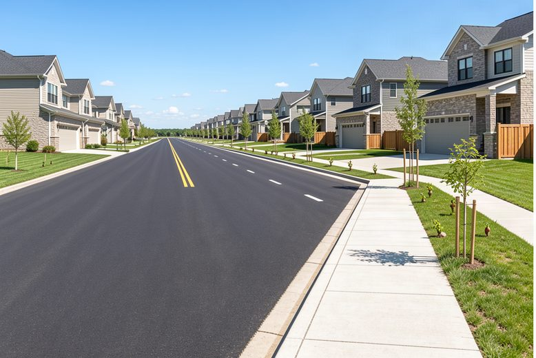
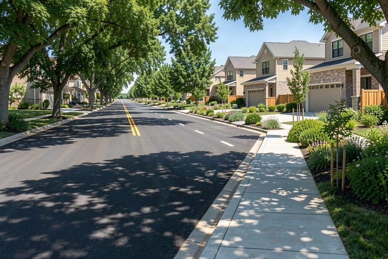
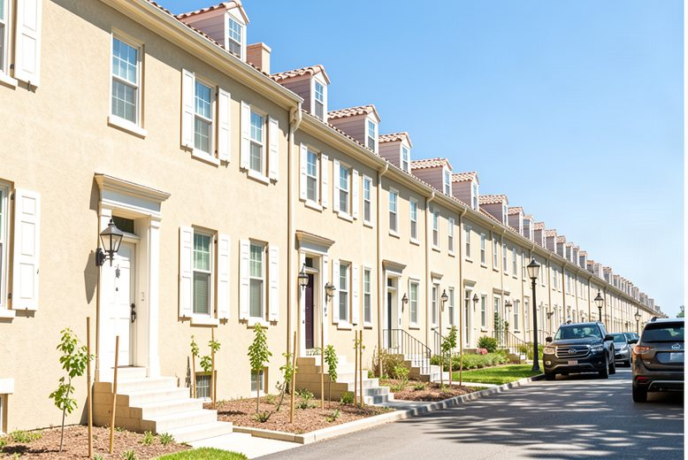
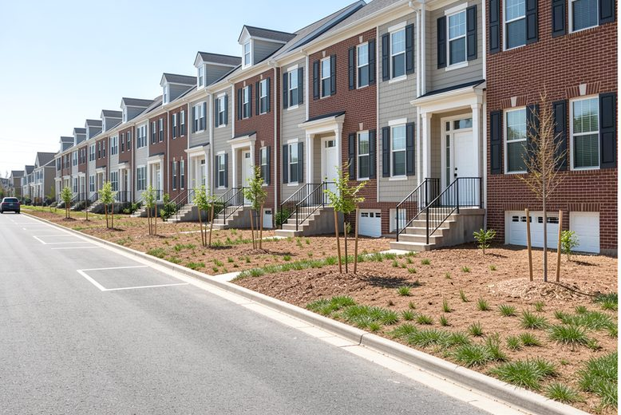
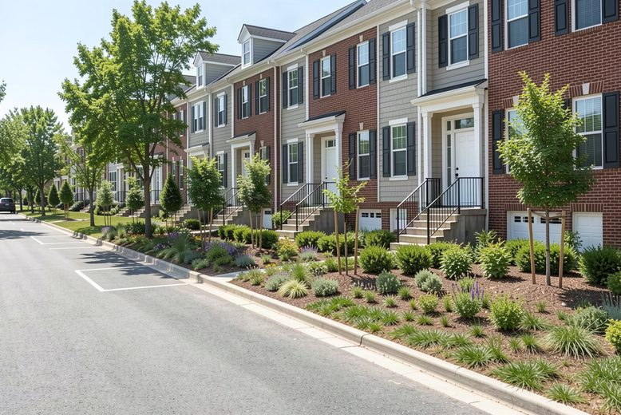
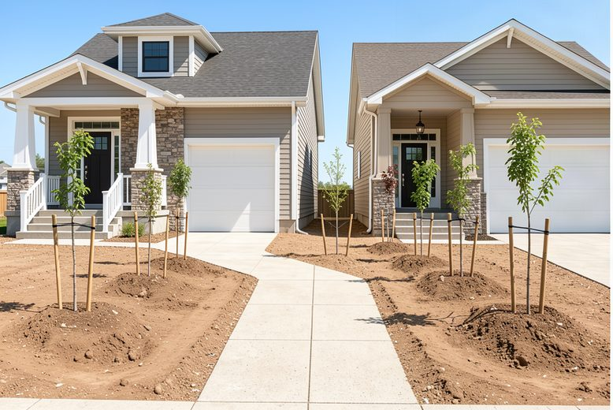
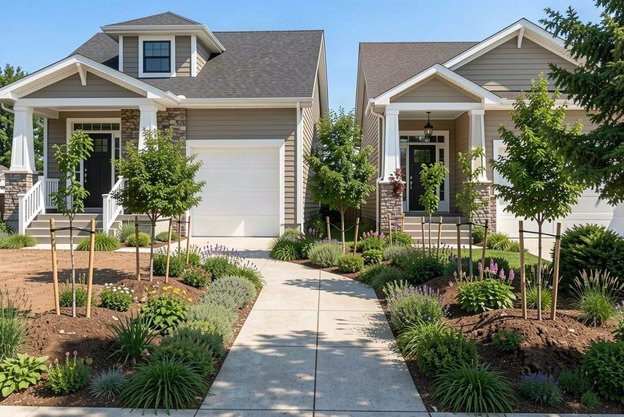
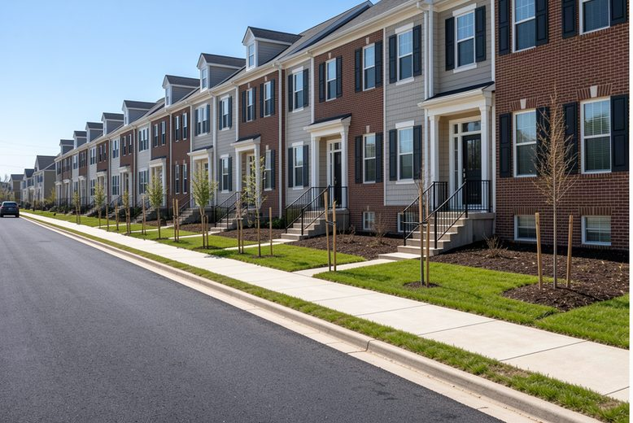
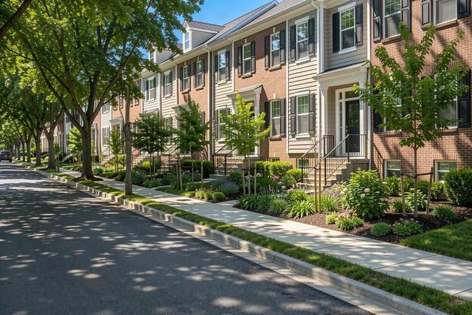
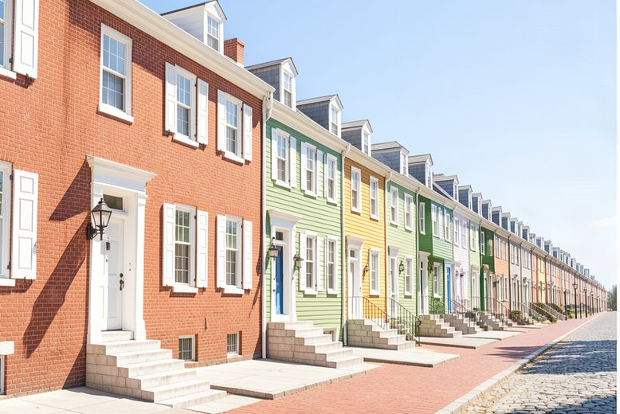
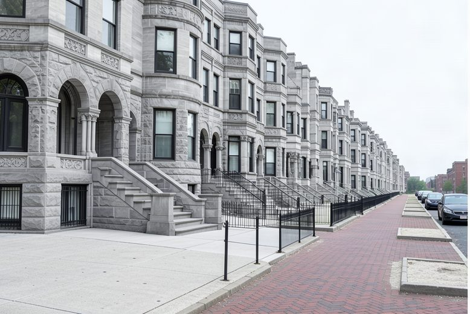
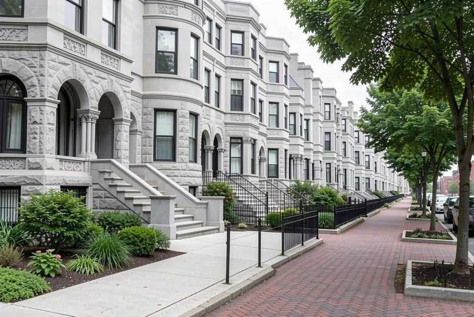
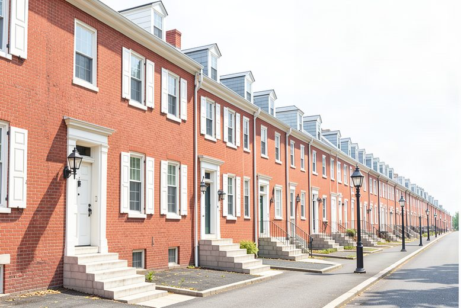
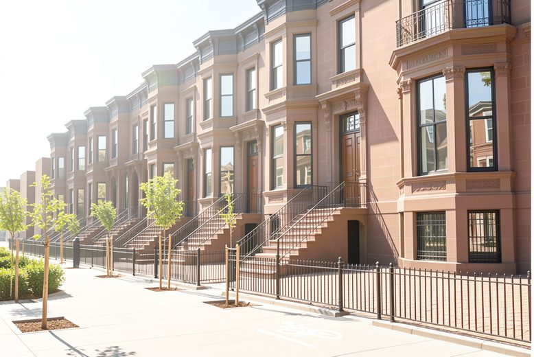
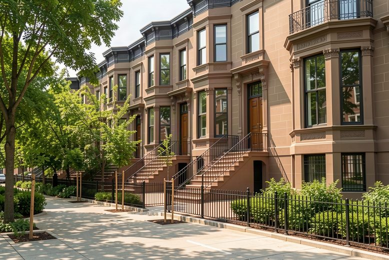
What the canopy is doing
The feeling is not a taste argument. Shade, water, and time show up as temperature, bills, and sale prices.
4–6°F
Suburban neighborhoods with mature trees run cooler in summer than new suburbs without them. Groves have been measured about 9°F cooler than open terrain at peak.2Shade plus water leaving the leaves. That is the climate of a street.
20–45°F
Walls and roofs under canopy run that much cooler at the surface. A parked car in shade has been measured about 45°F cooler inside.2You feel this on stoops and steering wheels before you feel it on a thermostat.
~10%
Direct shade on buildings cuts air-conditioning demand. Green infrastructure around buildings has been associated with energy-use reductions on that order.1Cooling the street cools the house.
15–27%
Urban trees can take up that share of annual rainfall before it hits the pipe.1A grove is also drainage.
3–15%
Larger yard and street trees have been associated with that range of added home value across neighborhoods; good cover on the block often sits around 6–9%.3The expensive-looking street is usually the shaded one.